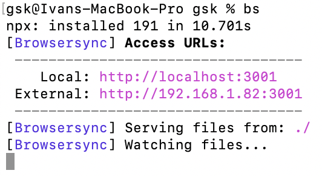

Как добавить алиас в macOS
-
Открываем/создаем файл .zshrc в текстовом редакторе nano с помощью команды
nano ~/.zshrc -
Вводим alias, название алиаса и команду, которая будет выполняться при вводе алиаса
alias bs='npx browser-sync start --server --no-notify --no-ui --files **/*' -
Для записи в файл нажимаем control + O, для выхода – control + X
-
Чтобы алиас заработал сейчас, нужно обновить shell environment, введя команду
source ~/.zshrc
Вот так вот. Теперь алиас будет работать!
